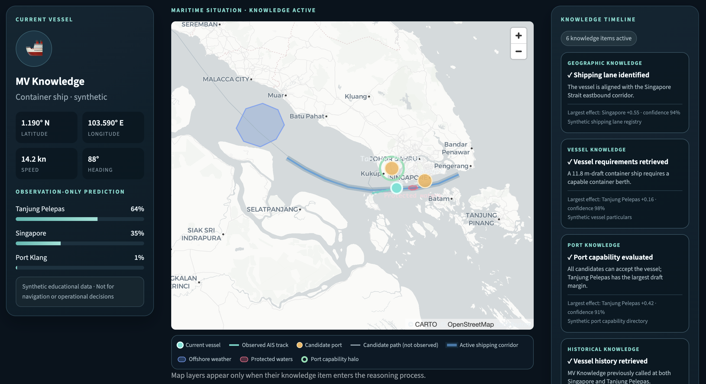

Where can the vessel plausibly move?
Shipping lanes, coastal geometry, protected waters and regional constraints shape the feasible paths.
Knowledge-native AI.
Open, by design.
Making knowledge programmable for AI.
A glimpse of knowledge-native AI
A vessel’s observed track may suggest several plausible destinations. But trajectory alone cannot explain its behavior. The answer changes when the right knowledge becomes active.

In this synthetic maritime example, the vessel’s recent AIS track initially favors Tanjung Pelepas. KnaiTai then activates the knowledge relevant to the situation: the shipping corridor along which the vessel is travelling, the vessel’s draft and berth requirements, the capabilities of nearby ports, geographic and protected-water constraints, and the vessel’s previous port calls.
Each knowledge item is not simply retrieved and appended to a prompt. It enters the reasoning process with an explicit, inspectable effect—strengthening, weakening or qualifying a candidate destination.
Shipping lanes, coastal geometry, protected waters and regional constraints shape the feasible paths.
Vessel class, draft, cargo and berth requirements determine which destinations are operationally suitable.
Port depth, berth capability and operating characteristics distinguish merely nearby ports from viable destinations.
Prior calls and recurring behavioral patterns provide evidence that the current trajectory alone cannot reveal.
The point of Knowledge-native AI: knowledge is not background material surrounding the model. It is selected, made active, given computational effect and kept visible in the resulting reasoning.
(Stay tuned for KnaiTai demonstrations, tools and open-source releases.)